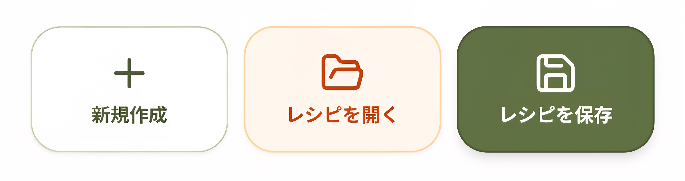

お菓子作りのための、
プロ仕様の成分計算。
文部科学省「日本食品標準成分表」に加え、メーカー固有の製菓材料データを約4,300件収録。
パティシエや和菓子職人の皆様の、栄養成分表示ラベル作成やレシピ管理を強力にサポートします。

プロの現場を支える強力な機能
圧倒的な製菓材料データベース
文部科学省の基本データに加え、メーカー固有の製菓・製パン材料を約4,300件追加収録。特殊な小麦粉やチョコレートなど、こだわりの材料も正確に計算できます。
栄養表示ラベル作成を効率化
利用する食材を検索して追加するだけで、食品表示法で義務付けられた「熱量・たんぱく質・脂質・炭水化物・食塩相当量」を瞬時に算出。焼成による重量変化にも対応します。
レシピ保存・PDF出力
作成したレシピを保存していつでも再計算できるほか、見やすいデザイン（カラー保存）機能や、計算結果をそのままPDF形式で出力する機能を搭載しています。
インストール不要のPWA
ブラウザの機能を利用したPWAに対応。SafariやChromeから「ホーム画面に追加」するだけで、ネイティブアプリのようにスムーズかつ快適に操作できます。
詳しい仕様と使い方
栄養表示の義務化に完全対応
レシピ単位での登録により、商品パッケージに必要な栄養成分表示（カロリー・PFC・食塩相当量）を正確に割り出します。個人店から小規模の製菓店まで、面倒な計算業務を大幅に削減できます。
プライバシーとセキュリティ
登録したデータや読み取った情報は、ユーザーの端末内（ブラウザのローカルストレージなど）に安全に保存されます。大切な個人のデータが外部に漏洩することはありません。
レスポンシブデザイン
スマートフォン（iOS/Android）、タブレット、PCのすべての画面サイズに最適化されています。どの端末からアクセスしても美しいUIで直感的に操作できます。
完全無料で始めましょう
このアプリは個人・商用問わず、すべての機能を完全無料でご利用いただけます。課金や面倒な会員登録も不要です。
お手持ちのスマートフォンのブラウザからアクセスし、ホーム画面に追加してアプリとしてご利用ください。